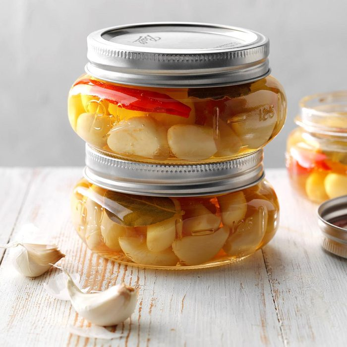

Spicy Pickled Garlic

Description
Pickling garlic mellows out the pungent garlic taste, making it extremely versatile. This spicy pickled garlic is perfect for:
- spreading on crackers
- mixing with butter
- serving on salad whole or sliced
- mixing with olive oil
- eating alone as a snack
This delicious pickled garlic is so much better than what you get from a store. Store up to a few months in the refrigerator.
Ingredients
- 2 quarts water
- 3 cups peeled garlic cloves
- 12 coriander seeds
- 6 whole peppercorns
- 3 dried chiles, split
- 3 whole allspice
- 1 bay leaf
- 1 1/2 cups white wine vinegar
- 1 tbs sugar
- 1 1/2 tsps canning salt
Steps
- In a large sauce pan, bring water to a boil.
- Add garlic and boil 1 minute.
- Meanwhile, divide corianter, peppercorns, chiles, allspice, and the bay leaf among three hot half-pint jars.
- Drain garlic and pack into jars.
- In a small saucepan, combine vinegar, sugar, and salt. Bring to a boil, stirring constantly.
- Carefully ladle hot liquid over garlic, leaving 1/2 inch headspace.
- Remove air bubbles.
- Wipe rims, center lids on jars, and screw on bands until tight.
- Place jars into canner with simmering water. Make sure they are completely covered with water.
- Bring to a boil and process for 10 minutes.
- Remove jars and cool.
Recipe by Taste of Home